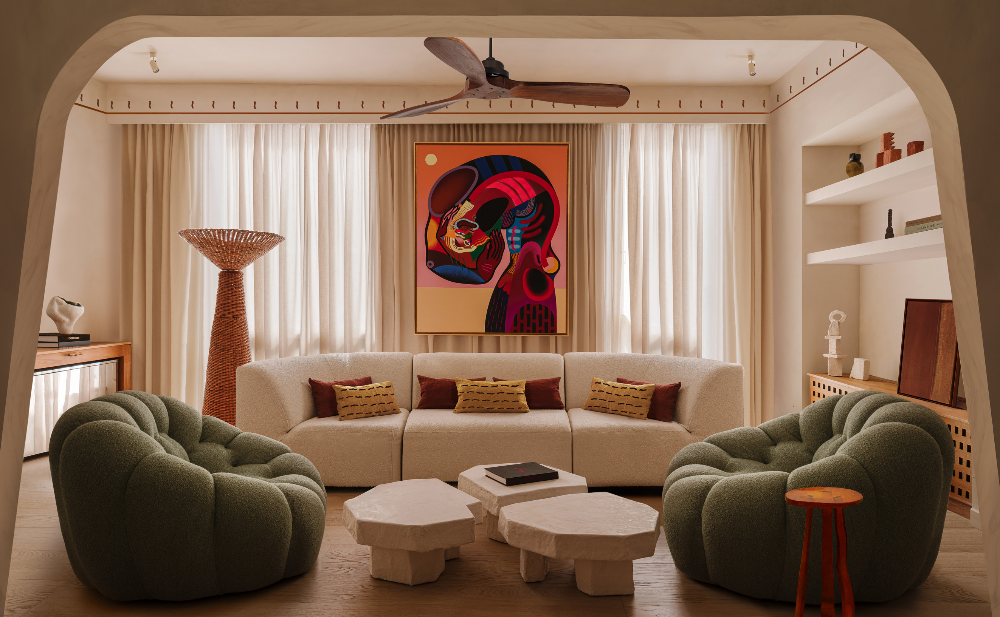

Graphic and Digital Designer from Barcelona
working on design-driven development and multidisciplinary design with agencies and individuals to craft digital experiences.
Pablo Castillo
Website experience and development for Barcelona-based photographer
Pablo Castillo.
Development
UX/UI
Interaction
Portfolio
Pablo Castillo
1/3

Szymon Keller
Design and development website for interior designer and collectible objects
Szymon Keller.